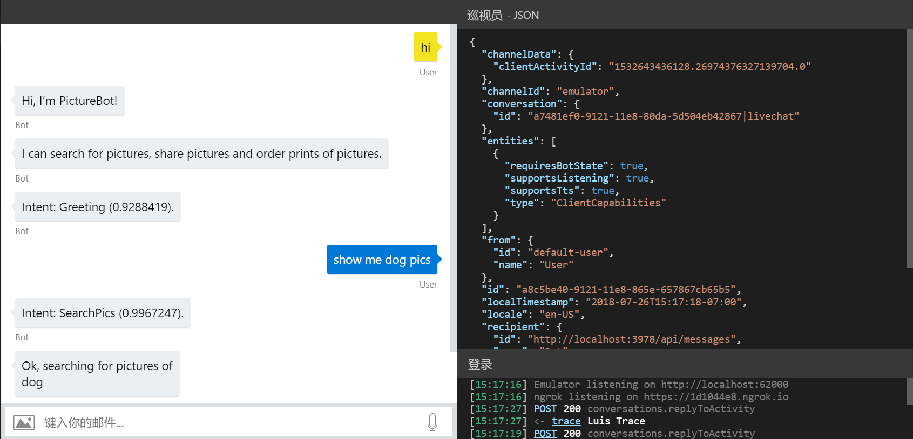

本研讨会介绍如何使用 Microsoft Bot Framework 执行日志记录以及存储聊天对话的各个方面。完成这些实验后，你将能够：
本实验假定你已在实验 3 中生成并发布了机器人。
建议执行该实验，这样才能实现本实验中涵盖的记录。如果没有执行该实验，可以仔细阅读所有练习，并根据需要查看一些代码或者将代码用于自己的应用程序中。
在本实验中，我们将介绍一些不同方式，我们将使用 Bot Framework 来拦截和记录机器人与用户的对话数据。首先，我们将使用内存存储，这非常合适用于测试，但并不适合用于生产环境。
接下来，我们将通过一个非常简单的实现来了解如何在 Azure 中将对话中的数据写入文件。具体来说，我们将用户发送到机器人的消息放入列表中，并将列表以及一些其他项目存储在临时文件中（不过你可以根据需要将这个文件更改为特定的文件路径）
我们来了解一下在不向机器人添加任何内容的情况下可以收集哪些信息来完成测试。
在 Visual Studio 中打开 PictureBot.sln。
注意：如果未完成实验 3，可使用初学者解决方案。
按 F5 运行你的机器人
在 Bot Framework Emulator 中打开机器人并进行快速对话：
查看机器人仿真器调试区域，注意以下几点：
如果单击消息，则可以使用右侧的“Inspector-JSON”工具查看其关联的 JSON。单击消息并检查 JSON，以查看可以获取的信息。
右下角的“日志”包含完整的对话日志。让我们来进行深入了解。
你将看到的第一部分是仿真器正在侦听的端口
你还可以看到 ngrok 正在收听的位置，并且可以使用“ngrok 流量检查器”链接检查 ngrok 的流量。但是，你应注意到，如果我们访问的是本地地址，我们将绕过 ngrok。此处的 ngrok 仅用于参考，因为此研讨会不涉及远程测试
如果调用过程中出现错误（POST 200 或 POST 201 响应以外的任何错误），你可以单击该错误并在“Inspector-JSON”中查看非常详细的日志。根据错误类型，你甚至可以通过代码获取堆栈跟踪并尝试指出错误发生的位置。调试机器人项目时，这一点非常有用。
调用 LUIS 时，你也可以看到一个 Luis Trace。如果单击 trace 链接，则可以看到 LUIS 信息。你可能会注意到，此特定实验中未设置此项。

可以在此处了解有关使用仿真器进行测试、调试和记录日志的更多信息。
默认的机器人存储提供程序使用内存存储，重启机器人时其中的内容会被清理。这仅适用于测试目的。如果要保留数据但不想将机器人连接到数据库，则可以使用 Azure 存储提供程序或使用 SDK 自行生成提供程序。
打开 Startup.cs 文件。 由于我们希望每条消息都遵循此过程，因此我们将在 Startup 类中使用 ConfigureServices 方法将存储信息添加到 Azure Blob 文件。请注意，目前我们正在使用：
IStorage dataStore = new MemoryStorage();
如你所见，当前的实现使用内存存储。同样，建议将此内存存储仅用于本地机器人调试。重启机器人时，将删除存储在内存中的所有内容。
将当前的 Istorage 行替换为以下内容，从而将其更改为基于 FileStorage 的持久性：
var blobConnectionString = Configuration.GetSection("BlobStorageConnectionString")?.Value;
var blobContainer = Configuration.GetSection("BlobStorageContainer")?.Value;
BlobsStorage dataStore = new BlobsStorage(blobConnectionString, blobContainer);
return dataStore;
还需要将单一实例定义从
services.AddSingleton<IStorage, MemoryStorage>(sp =>
更改为
services.AddSingleton<IStorage, BlobsStorage>(sp =>
切换到 Azure 门户，导航到 blob 存储帐户
从 “概述” 选项卡中单击 “容器”
检查是否存在 chatlog容器，如果不存在，单击 “+ 容器”：
如果尚未执行此操作，请单击 “访问键” 并记录连接字符串
打开 appsettings.json 并添加 blob 连接字符串详细信息：
"BlobStorageConnectionString": "",
"BlobStorageContainer" : "chatlog"
按 F5 运行机器人。
在仿真器中，与机器人进行示例对话。
注意，如果没有得到回复，请检查 Azure 存储帐户连接字符串
切换到 Azure 门户，导航到 blob 存储帐户
单击 “容器”，然后打开 ChatLog 容器
选择聊天日志文件（它应该以“emulator…”开头），然后选择“编辑”。 你在文件中看到哪些内容？你期待/希望看到却未看到哪些内容？
你应看到以下类似内容：
{"$type":"System.Collections.Concurrent.ConcurrentDictionary`2[[System.String, System.Private.CoreLib],[System.Object, System.Private.CoreLib]], System.Collections.Concurrent","DialogState":{"$type":"Microsoft.Bot.Builder.Dialogs.DialogState, Microsoft.Bot.Builder.Dialogs","DialogStack":{"$type":"System.Collections.Generic.List`1[[Microsoft.Bot.Builder.Dialogs.DialogInstance, Microsoft.Bot.Builder.Dialogs]], System.Private.CoreLib","$values":[{"$type":"Microsoft.Bot.Builder.Dialogs.DialogInstance, Microsoft.Bot.Builder.Dialogs","Id":"mainDialog","State":{"$type":"System.Collections.Generic.Dictionary`2[[System.String, System.Private.CoreLib],[System.Object, System.Private.CoreLib]], System.Private.CoreLib","options":null,"values":{"$type":"System.Collections.Generic.Dictionary`2[[System.String, System.Private.CoreLib],[System.Object, System.Private.CoreLib]], System.Private.CoreLib"},"instanceId":"f80db88d-cdea-4b47-a3f6-a5bfa26ed60b","stepIndex":0}}]}},"PictureBotAccessors.PictureState":{"$type":"Microsoft.PictureBot.PictureState, PictureBot","Greeted":"greeted","Search":"","Searching":"no"}}
在本实验中，我们将重点关注用户发送到机器人的实际言语。这样做有助于确定用户尝试使用机器人完成的对话和操作类型。
可以通过更新 PictureState.cs 文件中的 UserData 对象中存储的内容以及向 PictureBot.cs 中的对象添加信息来实现此目的：
打开 PictureState.cs
在以下代码之后：
public class PictureState
{
private readonly PictureBotAccessors _accessors;
private DialogSet _dialogs;
添加：
// A list of things that users have said to the bot
public List<string> UtteranceList { get; private set; } = new List<string>();
在上面，我们简单地创建了一个列表，用于存储用户发送到机器人的消息。
在此示例中，我们选择使用状态管理器来读取和写入数据，但也可以选择不使用状态管理器，直接从存储中读取和写入数据。
如果选择直接写入存储，则可以根据自己的方案设置 eTag。通过将 eTag 属性设置为
*，使机器人的其他实例可以覆盖以前写入的数据，即保留最后一次写入的数据。我们不会在此处对其进行介绍，但你可以了解有关管理并发的更多信息。
在运行机器人之前，要做的最后一件事是使用 OnTurn 操作将消息添加到列表中。
在 PictureState.cs 中的 Searching 声明后添加新字段
public List<string> UtteranceList { get; private set; } = new List<string>();
在 PictureBot.cs 中的以下代码后：
public override async Task OnTurnAsync(ITurnContext turnContext, CancellationToken cancellationToken = default(CancellationToken))
{
添加：
var utterance = turnContext.Activity.Text;
var state = await _accessors.PictureState.GetAsync(turnContext, () => new PictureState());
state.UtteranceList.Add(utterance);
await _accessors.ConversationState.SaveChangesAsync(turnContext);
注意： 如果修改了状态，则必须保存状态
第一行接收用户传入的消息并将其存储在名为 utterance 的变量中。下一行将言语添加到在 PictureState.cs 中创建的现有列表中。
按 F5 运行机器人。
与机器人进行另一次对话。停止机器人并检查日志文件中保存的最新 blob。现在是什么情况？
{"$type":"System.Collections.Concurrent.ConcurrentDictionary`2[[System.String, System.Private.CoreLib],[System.Object, System.Private.CoreLib]], System.Collections.Concurrent","DialogState":{"$type":"Microsoft.Bot.Builder.Dialogs.DialogState, Microsoft.Bot.Builder.Dialogs","DialogStack":{"$type":"System.Collections.Generic.List`1[[Microsoft.Bot.Builder.Dialogs.DialogInstance, Microsoft.Bot.Builder.Dialogs]], System.Private.CoreLib","$values":[{"$type":"Microsoft.Bot.Builder.Dialogs.DialogInstance, Microsoft.Bot.Builder.Dialogs","Id":"mainDialog","State":{"$type":"System.Collections.Generic.Dictionary`2[[System.String, System.Private.CoreLib],[System.Object, System.Private.CoreLib]], System.Private.CoreLib","options":null,"values":{"$type":"System.Collections.Generic.Dictionary`2[[System.String, System.Private.CoreLib],[System.Object, System.Private.CoreLib]], System.Private.CoreLib"},"instanceId":"f80db88d-cdea-4b47-a3f6-a5bfa26ed60b","stepIndex":0}}]}},"PictureBotAccessors.PictureState":{"$type":"Microsoft.PictureBot.PictureState, PictureBot","Greeted":"greeted","UtteranceList":{"$type":"System.Collections.Generic.List`1[[System.String, System.Private.CoreLib]], System.Private.CoreLib","$values":["help"]},"Search":"","Searching":"no"}}
卡住或中断？此时，可以在 /code/PictureBot-FinishedSolution-File 下找到实验的解决方案。你需要在
appsettings.json文件中插入 Azure 机器人服务和 Azure 存储设置的密钥。建议使用此代码作为参考，而不是作为解决方案运行，但如果选择运行此代码，请务必添加必需的密钥。
若要将数据库存储和测试合并到日志记录解决方案中，建议使用以下基于此解决方案的自引导教程：在 Cosmos 中存储数据。